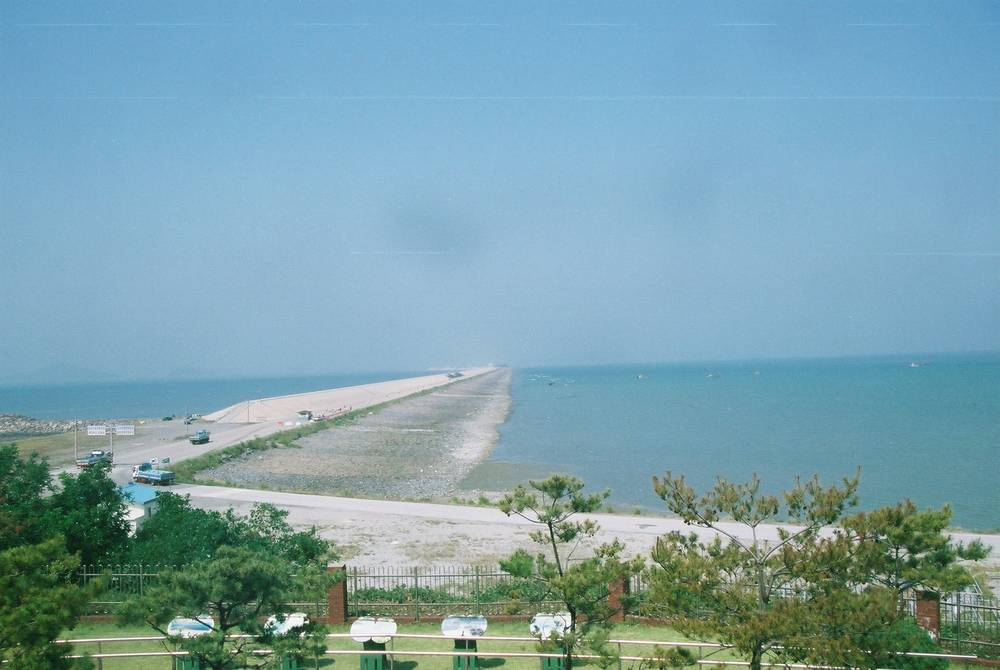

새만금 산단 RE100용 30MW 태양광, 첫 공모에 1개 컨소시엄만…새만금개발공사 13일까지 재공모

공유수면 약 44만㎡에 463억 원 들여 짓고 준공 뒤 20년 운영, 국가산단 5·6공구 입주기업과 직접전력거래(PPA)…첫 공모 참여가 저조했던 구체적 이유는 확인 안 돼
새만금개발공사가 새만금 스마트그린 국가시범산업단지 입주기업에 재생에너지를 공급할 30MW 규모 태양광 발전사업의 사업자를 다시 모집한다. 공사는 9월 17일부터 10월 29일까지 진행한 첫 공모에 1개 컨소시엄만 사업제안서를 내자, 2일부터 13일까지 '새만금 스마트그린 국가시범산업단지 재생에너지 공급 선도사업' 재공모에 들어갔다. 발전소는 새만금 육상태양광 3구역 남쪽 공유수면 약 44만㎡에 들어서며, 사업비는 약 463억 원으로 추산되고 선정된 사업자가 발전시설과 전력 공급 설비를 지은 뒤 준공 후 20년 동안 운영한다. 생산한 전기는 국가산업단지 5·6공구 입주기업 가운데 RE100 이행이 필요한 기업과 직접전력거래계약(PPA)을 맺어 팔고, 사업자는 이 장기 판매 수익으로 투자비를 회수하는 구조다. 태양광 사업은 초기 시설투자와 자금조달 비용이 크고 구매기업과의 계약 조건, 입주기업 전력 수요에 따라 수익이 달라지는 만큼 예상 판매단가와 투자비 회수 조건이 민간 참여를 가를 변수로 꼽힌다. 다만 첫 공모에 참여가 저조했던 구체적인 이유는 확인되지 않았다.
시민에너지 관점
아일랜드는 재생에너지 지원 경매(RESS)에서 낙찰된 사업마다 발전량에 따라 지역사회 기금을 내도록 하고, 주민·공동체가 주도하는 사업이 들어올 몫도 따로 열어 두었다. 공공이 땅을 내주고 판로까지 마련한 사업에 지역 몫을 얹으면 사업이 더 무거워진다는 우려가 나올 수 있지만, 463억 원을 한두 회사가 통째로 떠안는 대신 지역 주민·산단 노동자·협동조합의 출자와 지역 금융을 함께 묶으면 자금을 모을 바탕이 오히려 넓어진다. 공유수면이라는 공공 자원에서 나온 수익이 지역에 남아야 주민이 산단 재생에너지를 제 일로 여기고, 그래야 다음 사업도 순조롭다. 새만금개발공사는 이번 재공모와 다음 산단 태양광 공모부터 지역·시민 지분 참여를 평가 항목에 넣는 방안을 검토해야 한다.
출처: 전라매일 2026-11-02 이강호 원문 보기
창간 전 시험 발행 기사입니다.
セマングム産業団地のRE100向け30MW太陽光、初回公募に応じたのは1コンソーシアムのみ…セマングム開発公社が13日まで再公募
公有水面約44万㎡に463億ウォンを投じて建設し完工後20年運営、国家産業団地5・6工区の入居企業と電力直接取引（PPA）…初回公募の参加が低調だった具体的な理由は不明
セマングム開発公社が、セマングム・スマートグリーン国家モデル産業団地の入居企業に再生可能エネルギーを供給する30MW規模の太陽光発電事業の事業者を改めて募集する。公社は9月17日から10月29日まで行った初回公募に事業提案書を出したのが1コンソーシアムだけだったため、2日から13日まで「セマングム・スマートグリーン国家モデル産業団地再生可能エネルギー供給先導事業」の再公募に入った。発電所はセマングム陸上太陽光3区域南側の公有水面約44万㎡に建設され、事業費は約463億ウォンと見積もられ、選ばれた事業者が発電施設と電力供給設備を整備したうえで完工後20年間運営する。発電した電気は国家産業団地5・6工区の入居企業のうちRE100の履行が必要な企業と電力直接取引契約（PPA）を結んで販売し、事業者はこの長期の販売収入で投資費を回収する仕組みだ。太陽光事業は初期の設備投資と資金調達コストが大きく、購入企業との契約条件や入居企業の電力需要によって収益が変わるため、想定販売単価と投資費回収の条件が民間参加を左右する変数とされる。ただ、初回公募の参加が低調だった具体的な理由は確認されていない。
市民エネルギーの視点
アイルランドは再生可能エネルギー支援入札（RESS）で落札した事業ごとに発電量に応じて地域社会基金への拠出を求め、住民・地域共同体が主導する事業が入る枠も別に設けた。公共が土地を提供し販路まで用意した事業に地域の持ち分を上乗せすれば事業が重くなるという懸念もありうるが、463億ウォンを1、2社が丸ごと背負う代わりに地域住民・産業団地の労働者・協同組合の出資と地域金融を組み合わせれば、資金を集める土台はむしろ広がる。公有水面という公共の資源から生まれた収益が地域に残ってこそ、住民は産業団地の再生可能エネルギーを自分たちのことと受け止め、次の事業も円滑に進む。セマングム開発公社は今回の再公募と次の産業団地太陽光の公募から、地域・市民の持ち分参加を評価項目に加えることを検討すべきだ。
出典: 全羅毎日 2026-11-02 李康浩（イ・ガンホ） 原文を読む
創刊前の試験発行記事です。
新万金产业园区RE100用30MW光伏项目首次招标仅1个联合体参与…新万金开发公社13日前重新招标
在约44万平方米公有水面投资463亿韩元建设、竣工后运营20年，与国家产业园区5·6工区入驻企业签订直购电协议（PPA）…首次招标参与冷清的具体原因尚未查明
新万金开发公社将重新招募为新万金智慧绿色国家示范产业园区入驻企业供应可再生能源的30MW光伏发电项目运营方。公社于9月17日至10月29日进行的首次招标中只有1个联合体提交了项目方案书，随即于2日至13日对"新万金智慧绿色国家示范产业园区可再生能源供应先导项目"进行重新招标。电站将建在新万金陆上光伏3区南侧约44万平方米的公有水面上，项目费用估计约463亿韩元，中标方负责建设发电设施和供电设备，并在竣工后运营20年。所发电力将通过直购电协议（PPA）出售给国家产业园区5·6工区入驻企业中需要履行RE100的企业，运营方依靠这笔长期售电收入收回投资。光伏项目前期设备投资和融资成本高，收益又取决于与购电企业的合同条件以及入驻企业的用电需求，因此预期售电单价和投资回收条件被视为左右民间参与的变量。不过，首次招标参与冷清的具体原因尚未查明。
市民能源视角
爱尔兰在可再生能源支持拍卖（RESS）中要求每个中标项目按发电量向社区基金出资，并为居民和社区主导的项目单独预留了参与空间。有人可能担心，在公共部门提供土地、连销路都已安排好的项目上再加入地方份额，会让项目更加沉重；但与其让一两家公司独自承担463亿韩元，不如把当地居民、园区劳动者、合作社的出资和地方金融结合起来，融资基础反而会更宽。只有公有水面这一公共资源产生的收益留在当地，居民才会把园区的可再生能源当作自己的事，后续项目也才能顺利推进。新万金开发公社应考虑从此次重新招标和下一轮园区光伏招标开始，把地方和市民入股参与纳入评审项目。
来源: 全罗每日 2026-11-02 李康浩 查看原文
本文为创刊前试发行文章。
Only one consortium bids for 30 MW RE100 solar project at Saemangeum industrial complex; developer reopens tender until 13 November
Plant on about 440,000 square metres of public waters would cost some 46.3 billion won and run for 20 years after completion, selling power to tenant firms in zones 5 and 6 through direct PPAs; the specific reason for the weak first round has not been confirmed
The Saemangeum Development Corporation is seeking a developer again for a 30 MW solar power project that would supply renewable electricity to companies in the Saemangeum Smart Green National Pilot Industrial Complex. After only one consortium submitted a proposal in the first call, held from 17 September to 29 October, the corporation reopened the tender for the "Saemangeum Smart Green National Pilot Industrial Complex Renewable Energy Supply Lead Project" from 2 to 13 November. The plant would be built on about 440,000 square metres of public waters south of onshore solar zone 3 in Saemangeum, with project costs estimated at about 46.3 billion won; the selected developer would build the generation and power supply facilities and operate them for 20 years after completion. The electricity would be sold through direct power purchase agreements (PPAs) to tenant companies in zones 5 and 6 of the national industrial complex that need to meet RE100 commitments, and the developer would recover its investment from these long-term sales. Because solar projects carry heavy upfront investment and financing costs, and returns depend on contract terms with buyers and on tenant companies' power demand, the expected sale price and investment recovery terms are seen as the variables that will decide private participation. The specific reason for the weak response to the first call, however, has not been confirmed.
Citizen Energy View
Ireland's renewable electricity support auctions (RESS) require every winning project to pay into a community benefit fund in line with its output, and they set aside a separate route for projects led by residents and communities. Some may worry that adding a local share to a project where the public sector has already provided the land and lined up buyers would only make it harder to finance, but instead of one or two companies carrying the whole 46.3 billion won, combining investment from local residents, industrial-complex workers and cooperatives with local finance would actually widen the funding base. Only when the returns from a public resource such as public waters stay in the region will residents see the complex's renewable energy as their own, and only then will the next project go smoothly. The Saemangeum Development Corporation should consider adding local and citizen equity participation to its evaluation criteria, starting with this re-tender and the next industrial-complex solar call.
Source: Jeolla Maeil 2026-11-02 Lee Kang-ho Read the original
This article was published during the trial period before launch.